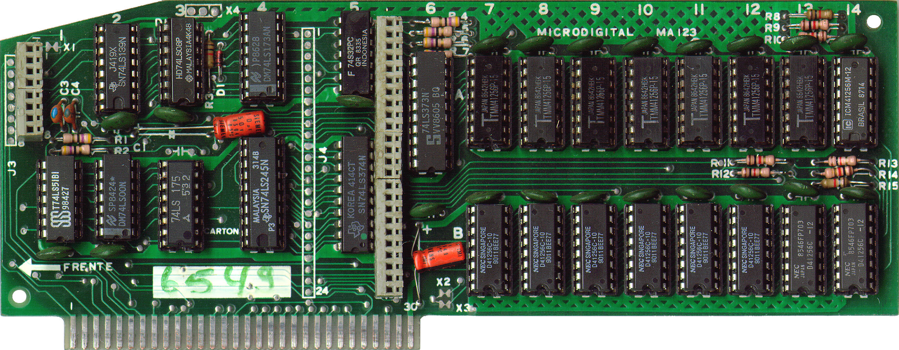
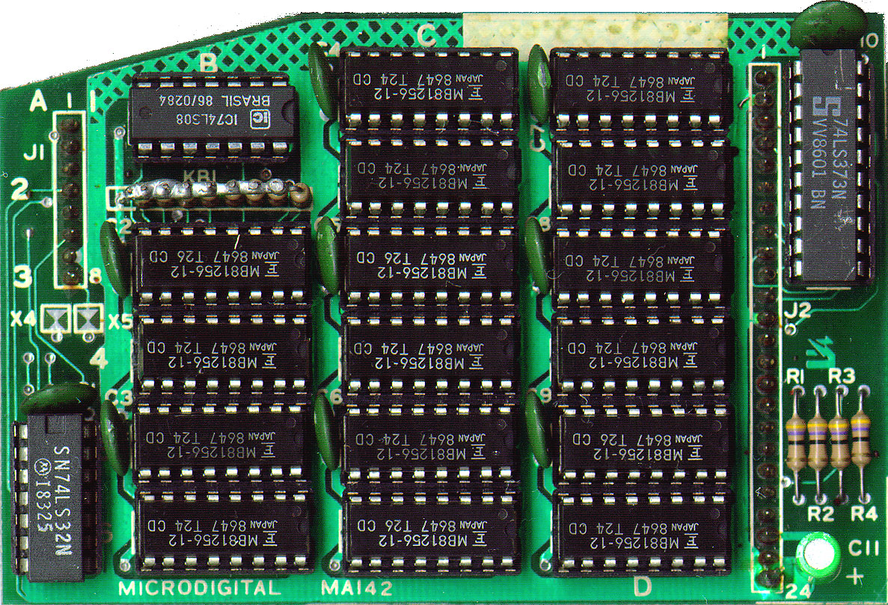
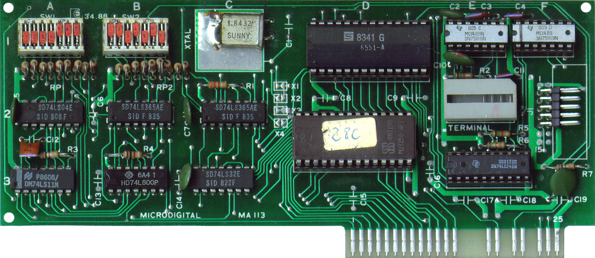
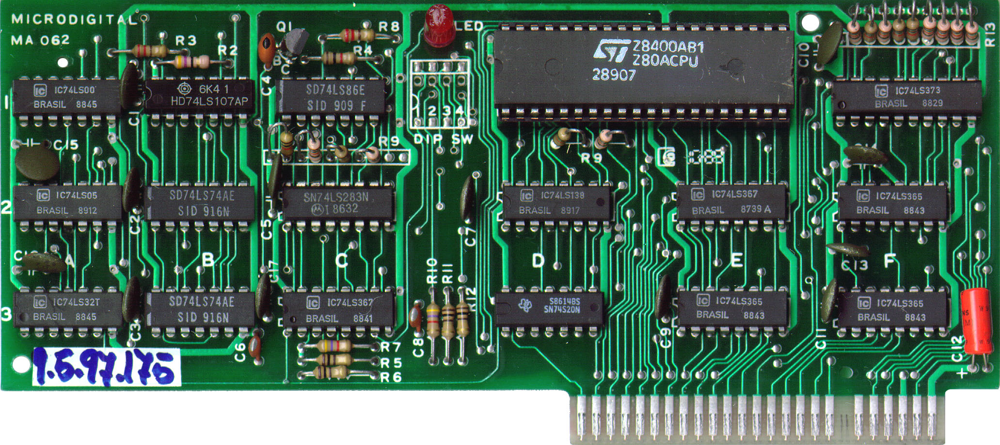
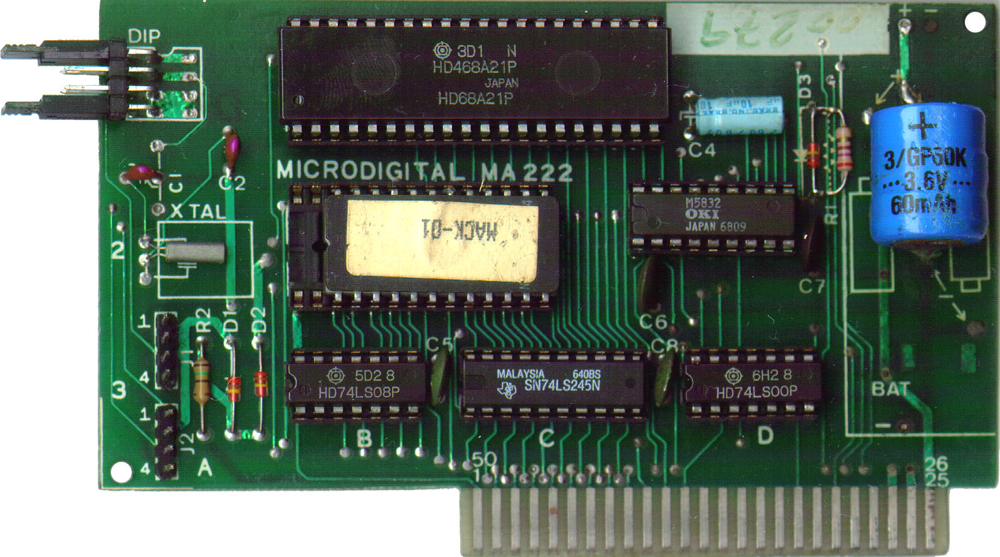
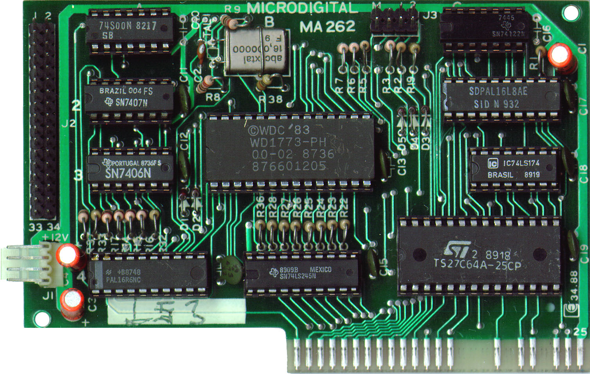
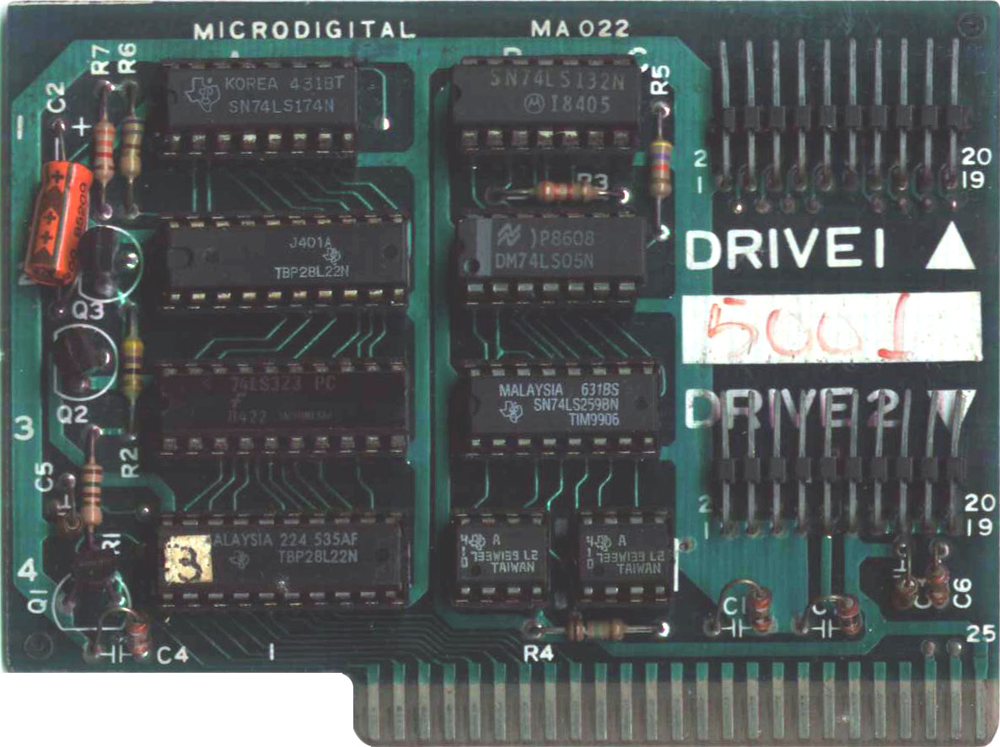

| TK3000 IIe | |
|---|---|
| microcomputador pessoal | |
|
|
|
| Fabricante | Microdigital Eletrônica |
| Descontinuado | 1989 (34–35 anos) |
| Lançamento | abril de 1986 (37–38 anos) |
| Características | |
| Arquitetura | Apple II |
| Sistema operacional | Applesoft BASIC, Apple DOS, ProDOS, GEOS, Contiki, Apple Pascal, CP/M |
| Processador | WDC 65C02 em 1MHz |
| Memória | 64kiB —3MiB (máxima) |
| Portal Tecnologias da Informação | |
TK3000 IIe é um modelo de microcomputador pessoal que foi fabricado pela empresa brasileira Microdigital Eletrônica Ltda., e é compatível com o modelo Apple IIe Enhanced da empresa estadunidense Apple Inc. [1] Foi apresentado ao público na V Feira Internacional de Informática, em setembro de 1985, [2] e colocado no mercado em abril de 1986 por Cz$ 12.500,00 [1] (aproximadamente R$ 13.000,00 em valores atualizados – setembro de 2023 [3] ).
Engenharia reversa e circuitos integrados dedicados
Devido a Apple utilizar circuitos integrados dedicados (ASICs), chamados MMU (Memory Management Unit) e IOU (Input / Output Unit) [4] no modelo Apple IIe, copiar esses modelos se tornou mais complicado em relação aos modelos Apple II e Apple II+, que eram construídos com circuitos integrados de "prateleira" [5] . Por esse motivo, a Microdigital foi obrigada a fazer engenharia reversa desses componentes para obter compatibilidade com o modelo da Apple.
Baseado nessa pesquisa de engenharia reversa, a Microdigital projetou dois circuitos integrados dedicados, utilizados no TK3000 IIe, o MC168300 e o MC168310, [6] [7] realizando funções semelhantes aos circuitos integrados MMU e IOU, respectivamente.
Teclado
O teclado do TK3000 IIe tem 77 teclas, incluindo os conjuntos alfanumérico, com disposição QWERTY, numérico reduzido e teclas de controle, além de um conjunto com 5 LEDs indicadores para power (energizado), caps lock (maiúsculas travadas), mode (modo acentuação ativo – conjunto de caracteres com acentos em tela), accent (indica que uma tecla com símbolo de acento foi pressionada, aguardando a escolha da vogal a ser acentuada) e prog (modo de programação de teclas). [8]
Um computador Zilog Z80 completo (UCP + RAM + ROM) é usado para o controle do teclado [8] em substituição ao circuito integrado controlador de teclado AY-5-3600 usado no modelo da Apple, [9] acrescentando algumas características funcionais:
- Seleção de conjunto de caracteres acentuados em tela com a tecla "mode" (funcional apenas para vogais em minúsculo);
- Acentuação estilo máquina de escrever, pressionando a tecla com o símbolo de acento e, em seguida, a tecla com o caractere a ser acentuado. Exemplo: pressionar a tecla “~” e, em seguida, a tecla “a” resulta no caractere “ã”;
- Atribuição de sequências de caracteres a determinadas teclas. Por exemplo, associar a palavra “home” as teclas "control" + "h", de forma que, ao invés de digitar todo o comando, basta pressionar simultaneamente as teclas "control" e “h” para obter a palavra inteira. Até 512 caracteres podem ser atribuídos, não importando a qual quantidade de teclas, se uma ou várias. A programação das teclas pode ser salva e recuperada de disco através do programa TKPROG que vem no disquete com o sistema operacional TKDOS 3.3. [10] Um conjunto de pré-programações para as teclas, com comandos do Applesoft BASIC e do Apple DOS, pode ser obtida com o pressionamento simultâneo das teclas "control" e "mode". [8]
Apesar das facilidades oferecidas pelo teclado do TK3000 IIe, duas críticas se tornaram comuns [11] : A ausência da tecla “Return” no teclado numérico reduzido que, além de atrapalhar a digitação de dados numéricos, atrapalha a operação de certos programas que atribuem função específica a essa tecla (a tecla “Return” do conjunto numérico reduzido é totalmente independente da tecla “Enter” do conjunto alfanumérico nos computadores da Apple). A segunda crítica ao teclado se refere a incompatibilidade com alguns jogos que não recebem os comandos de forma apropriada, provavelmente pela diferença no circuito de controle de teclado do TK3000 IIe em relação ao modelo da Apple.
Gabinete
Feito em plástico ABS injetado, com base em chapa de alumínio estampado, segue o típico design da linha Apple II, com o teclado em declive embutido na parte frontal e tampa superior com trava por encaixe, que dá acesso a fonte de alimentação, placa-mãe e todas as demais placas encaixadas nos slots.
A trava da tampa é razoavelmente delicada, quebrando com certa facilidade se comparada ao sistema de trava dos modelos da Apple. O TK3000 IIe era vendido com dois modelos diferentes de tampa: Uma simples, plana, como em qualquer gabinete de Apple II e; Outra, com espaço para dois acionadores slim de disquete de 5,25″, que faz com que fiquem embutidos no gabinete. Neste último caso, a trava da tampa se mostra novamente inconveniente pois, se o microcomputador é levantado em posição vertical, com o lado do teclado para cima, a tampa, pesada com os acionadores, escorrega para trás, que é o movimento de destrava e abertura, levando a queda do conjunto tampa com acionadores de disquete.
O painel traseiro segue o formato dos modelos Apple II e II+, com rasgos para a saída de cabos, diferente dos modelos Apple IIe, que possuem furos com tampas removíveis, que permitem a afixação exata de conectores ou passagem dos cabos.
Sistemas operacionais
Assim como todos os modelos de Apple II, se não houver nenhuma placa que altere o funcionamento padrão ou algum dispositivo de armazenamento de dados, o TK3000 IIe apresentará como sistema operacional o editor da linguagem BASIC (Applesoft BASIC, no caso do TK3000 IIe), residente em firmware, que permite:
- Executar comandos da linguagem BASIC em modo direto (o comando ou linha de comandos é imediatamente executado, sem que faça parte de nenhum programa);
- Inserir, remover ou editar linhas de comandos da linguagem BASIC em um programa na memória;
- Salvar programas em, ou carregar programas de fitas K7;
- Entrar no sistema monitor, um ambiente que permite manipulação direta da memória, execução e debug de programas em linguagem de máquina, além das funções de assembler (converter código fonte em assembly para código executável/linguagem de máquina) e disassembler (converter código executável/linguagem de máquina para código fonte em assembly).
Caso esteja conectado a algum dispositivo de armazenamento de dados, o TK3000 IIe executa os mesmos sistemas operacionais que o Apple IIe Enhanced. Alguns desses sistemas operacionais requerem 80 colunas (exige placa de expansão de RAM com 1kiB ou mais no slot auxiliar) ou 128kiB de RAM (exige placa de expansão de RAM de 64kiB ou mais no slot auxiliar). Em todos os casos, é preciso ter o acionador de disquetes padrão Apple Disk II (exige placa de interface e respectivo acionador). Em alguns casos é possível o uso de algum outro dispositivo de armazenamento de dados ao invés do acionador Disk II:
- Apple DOS (todas as versões), da empresa Apple;
- ProDOS 8 (todas as versões), da empresa Apple;
- Apple Pascal, da empresa Apple;
- GEOS, da empresa GeoWorks;
- Contiki, de Adam Dunkels;
- CP/M, da empresa Digital Research (todas as versões específicas para Apple II com placa Softcard). Exige a presença da placa Softcard, da empresa Microsoft.
A Microdigital disponibilizou versões traduzidas e com pequenas alterações do Apple DOS versão 3.3, chamada de TKDOS 3.3, e do Apple ProDOS (versão indefinida), chamada de TKPRODOS.
Linguagens de programação
Todos os interpretadores, compiladores e ambientes de desenvolvimento integrado que executam em microcomputadores Apple IIe Enhanced podem ser usados no TK3000 IIe. Em alguns casos pode ser necessário o uso de 80 colunas, 128kiB de RAM ou acionador de disquetes (ou outro dispositivo de armazenamento de dados que possa substituí-lo). As linguagens de programação disponíveis nativamente são:
- Assembly 6502 / 65C02;
- BASIC;
- Pascal;
- Logo;
- Forth;
- Lisp;
- C;
- FORTRAN;
- Modula-2.
Com o uso do sistema operacional CP/M (requer uso de placa Softcard e de placa de interface Disk II com respectivo acionador de disco), pode-se utilizar quaisquer outras linguagens de programação disponível para esse sistema, além das acima citadas, tais como Assembly 8080 e Z80, COBOL, ALGOL, Prolog etc.
Placas de expansão, interfaces e periféricos
Qualquer placa de expansão, interface ou periférico que possa ser usado num Apple IIe Enhanced também pode ser usado no TK3000 IIe. A Microdigital fabricou algumas placas que podem ser usadas em qualquer modelo compatível com o computador Apple II, exceto as placas TK Works IIe e sua sobreplaca, que só podem ser usadas em modelos compatíveis como Apple IIe:
| Nome | Modelo | Descrição | Foto |
|---|---|---|---|
| TK Works IIe; | MA123 |
Placa de expansão de RAM com até 512kiB, para ser usada no slot auxiliar. [12] É cópia da placa RamWorks da marca Applied Engineering. |
 |
| TK Works IIe Sobreplaca | MA142 |
Sobreplaca com até 512kiB de RAM que permite aumentar a capacidade da placa TK Works IIe para até 1MiB. [12] É cópia da sobreplaca da marca Applied Engineering para a placa RamWorks. |
 |
| Super Parallel Card - SPC | MA163 |
Placa de interface paralela padrão Centronics, tem buffer de 16kiB, acentuação no padrão do TK3000 IIe e BRASCII / ABICOMP e é compatível com a placa Apple Parallel Card. Possui um computador Z80 completo (UCP + ROM + RAM) para gerenciar o buffer e a acentuação. [13] |

|
| Super Serial Card - SSC | MA113 |
Placa de comunicação serial padrão RS-232. É cópia da placa homônima da Apple. |
 |
| Super Z80 Card | MA062 |
Placa que acrescenta um microprocessador Z80 como UCP do TK3000 IIe, deixando-o compatível com o sistema operacional CP/M. É cópia da placa Softcard da empresa Microsoft. |
 |
| TK Clock | MA222 |
Placa com relógio de tempo real e calendário permanente, mantido por bateria recarregável. É cópia da placa Timemaster II H.O. da empresa Applied Engineering. |
 |
| Disk Interface Card II | MA262 |
Placa de interface para acionador de disquetes padrão IBM-PC. Funciona apenas com os sistemas operacionais ProDOS da Apple [14] e TKPRODOS da Microdigital. |
 |
| Disk Interface Card | MA022 |
Placa de interface para acionadores de disquete padrão Apple Disk II. É cópia da placa Disk II Interface Card da Apple. |
 |
Especificações técnicas
-
UCP:
- WDC 65C02 (1MHz);
- Zilog Z80 (2MHz) com placa Softcard;
-
Memória:
- ROM: 16kiB on-board;
- RAM: 64kiB on-board;
- Com placa de expansão no slot auxiliar, pode-se acrescentar de 1kiB de RAM (placa Apple 80-Column Text Card) até 3MiB de RAM (placa Applied Engineering RamWorks III). Com a placa Microdigital TK Works IIe, dependendo da configuração desta, pode-se acrescentar de 64kiB até 1MiB de RAM;
-
Teclado:
- Tipo profissional;
- Embutido no gabinete do microcomputador;
- 77 teclas, incluindo conjunto alfanumérico com disposição QWERTY, numérico reduzido e teclas de controle;
- 5 LEDs indicadores de estado;
-
Modos de vídeo:
- Texto em 24 linhas com 40 colunas, monocromático;
- Texto em 24 linhas com 80 colunas, monocromático1;
- Gráfico de baixa resolução em 48 linhas com 40 colunas, 16 cores2;
- Gráfico de baixa resolução em 48 linhas com 80 colunas, 16 cores1 2;
- Gráfico de alta resolução em 192 linhas com 280 colunas, monocromático3 4;
- Gráfico de alta resolução em 192 linhas com 140 colunas, 6 cores3 4 5;
- Gráfico de dupla alta resolução em 192 linhas com 560 colunas, monocromático3 4 6;
- Gráfico de dupla alta resolução em 192 linhas com 140 colunas, 16 cores3 4 6;
- 1 Requer expansão de memória no slot auxiliar;
- 2 As últimas 8 linhas gráficas podem ser apresentadas como 4 linhas de modo texto (modo mixado);
- 3 As últimas 32 linhas gráficas podem ser apresentadas como 4 linhas de modo texto (modo mixado);
- 4 Não há diferenças funcionais de hardware ou software entre os modos monocromático e colorido nos modos de alta e dupla alta resolução. Se o monitor de vídeo em uso for colorido, a resolução segue a descrição do modo colorido. Se o monitor de vídeo for monocromático (ou colorido, mas com o controle de cor reduzido ao mínimo), cada pixel colorido é reduzido a um conjunto de pixels monocromáticos, 2 pixels monocromáticos para cada pixel colorido no modo de alta resolução e 4 pixels monocromáticos para cada pixel colorido do modo de dupla alta resolução. A disposição dos pixels monocromáticos equivale ao código em binário da cor do pixel colorido;
- 5 A cores de um pixel dependem das cores dos pixels adjacentes e cada grupo de 7 pixels podem ter apenas 4 entre as 6 cores disponíveis;
- 6 Requer expansão de memória de 64kiB ou mais no slot auxiliar;
-
Expansão:
- 7 slots internos (numerados de 1 a 7) padrão Apple II, de 50 pinos edge connector;
- 1 slot interno (chamado de auxiliar) padrão Apple IIe, de 60 pinos edge connector;
- Controle de jogos:
- Analógico;
- Conector interno padrão DIP, de 16 pinos;
- Conector externo opcional padrão DE fêmea, de 9 pinos;
- Interface de cassete:
- Conector externo padrão P2 mono de 3,5mm para gravação e leitura de dados;
-
Saídas de vídeo:
- Codificação de cores no padrão PAL-M;
- Conector externo padrão RCA com sinal de vídeo composto;
- Conector externo padrão RCA com sinal de vídeo modulado em RF, canal 2 VHF;
-
Alimentação:
- 110V/220V +/- 10% (seleção manual por chave na fonte de alimentação) em corrente alternada; [15]
- 50Hz ou 60Hz;
- 11W a 60W (pico suportado de 80W) de consumo;
-
Dimensões
- 455mm x 385mm x 110mm (C x L x A), o modelo com tampa plana; [15]
- 455mm x 385mm x 160mm (C x L x A), o modelo com tampa com espaço para acomodar dois acionadores slim de disquetes de 5,25″;
-
Peso:
- 5,45kg, o modelo com tampa plana, sem nenhuma expansão ou periférico; [15]
- 8,9kg, o modelo com tampa com espaço para acomodar dois acionadores de disquete, contendo um acionador para disquetes de 5,25″ e outro para disquetes de 3,5″.
-
Emulação:
- Qualquer emulador de Apple IIe Enhanced é capaz de executar programas como o TK3000 IIe, mas há o emulador TK3000e, desenvolvido pelo brasileiro Fábio Belavenuto, que tem o intuito de ser mais exato, incluindo características funcionais, firmware e conjunto de caracteres do TK3000 IIe. O TK3000 é também emulado pelo programa AppleWin desde a versão 1.29.16.0 (Novembro de 2020).
Veja também
- Apple II
- Apple II+
- Apple IIe
- CCE MC-4000 //e
- TK2000
- TK3000 IIe Compact
Referências
- ↑ "Seção bits". Rio de Janeiro: Revista Micro Sistemas Ano V, maio/1986, número 54, pp.14-16
- ↑ PIAZZI, Pierluigi. "Muitas Opções: O Comprador Dita as Tendências". Rio de Janeiro: Revista Micro Sistemas Ano V, novembro/1985, número 50, pp.62-70
- ↑ «BCB - Calculadora do Cidadão». Calculadora do Cidadão – Correção de valores – Índice de preços (IPCA). Banco Central do Brasil. Abr 1986 – Set 2023. Consultado em 8 de novembro de 2023.
- ↑ Capítulo 7 – Hardware Implementation. California – EUA: Apple IIe Technical Reference Manual, julho/1985, pp.157-197
- ↑ Capítulo 6 - Hardware Configuration. California - EUA: Apple ][ Reference Manual, 1979, pp.87-116
- ↑ GOMES. São Paulo: Microdigital Esquema Elétrico, junho/1985
- ↑ MOISÉS. São Paulo: Microdigital Diagrama de Blocos TK3000 Color, janeiro/1986
- ↑ Capítulo 1 – O Teclado – São Paulo: Manual TK IIe, maio/1986, pp.I-1–I-10
- ↑ Capítulo 2 – Bult-in I/O Devices. California – EUA: Apple IIe Technical Reference Manual, julho/1985, pp.157-197
- ↑ Apêndice B – Descrição dos Programas – São Paulo: Manual TKDOS 3.3, 1986, pp.40–45
- ↑ GUIMARÃES, Antonio C. Salgado. TK3000 IIe. Rio de Janeiro: Revista Micro Sistemas, dezembro/1986, número 63, pp.44-45
- ↑ Apresentação – São Paulo: Manual TK Works IIe, 1986, p.5
- ↑ Apresentação – São Paulo: Manual Super Parallel Card, 1986, pp.5-6
- ↑ Apresentação – São Paulo: Manual Disk Interface Card II, p.1
- ↑ Capítulo I – Apresentação – São Paulo: Manual TK3000 IIe, maio/1986, p.I-3
Ligações externas
- Site Datassette.org, seção Revistas: Micro Sistemas - Onde podem ser baixadas as revistas Micro Sistemas digitalizadas referenciadas no artigo;
- Calculadora do Cidadão – Correção de valores – Índice de preços - Site do Banco Central do Brasil - Usado para calcular o valor atualizado;
- Site 1000bit, seção Manuals (selecionar Apple Computer Inc.) - Onde podem ser baixados os manuais Apple digitalizados referenciados no artigo;
- Site Datassette.org, seção Tech: Apple II - Onde podem ser baixados os documentos Microdigital digitalizados referenciados no artigo;
- Site Datassette.org, seção Manuais: Apple II - Onde podem ser baixados os manuais Microdigital digitalizados referenciados no artigo;
- Site do emulador TK3000e (Acessado em 18.02.2011);
| Microdigital Eletrônica Ltda. | |
|---|---|
| Lista de artigos relacionados com a empresa Microdigital | |
| Computadores domésticos | TK80 • TK82 • TK82C • TK83 • TK85 • TKS800 • TK-90X • TK 95 |
| Computadores profissionais | TK 2000 • TK-3000 IIe • TK-3000 IIe Compact • TK EXTended • LT 1600 D • TK Portable |
| Periféricos | TK Printer |
| Videogames | Onyx Jr |
| Softwares | TK DOS • TK ProDOS • provavelmente muitos outros... |